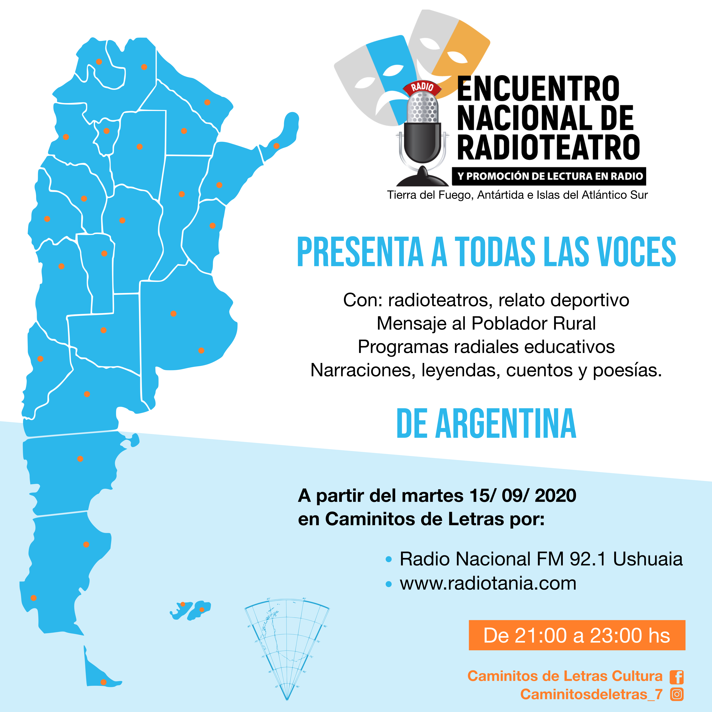

Caminitos de Letras Cultura es un programa radial en el cual se hace homenaje a la poesía en todas sus manifestaciones, sus directoras son Julieta Felicioni, Eugenia Felicioni, Claudia Valenzuela y Marcela Valenzuela, el programa cuenta con el elenco de Radioteatro Recuerdos y el elenco de Teatro Leído Tierra del Fuego. Trabaja promocionando la lectura en radio desde el año 2012 hasta la actualidad. Transmite todos los martes de 21:00 a 23:00 hs por Radio Nacional Ushuaia FM 92.1 TDF.

-

ENCUENTRO NACIONAL DE READIOTEATRO Y PROMOCIÓN DE LECTURA EN RADIO
“Todas las Voces” proyecto que tiene por objetivo transmitir, difundir y valorar las producciones de: radioteatros, cuentos, leyendas, mensaje al poblador rural, relato deportivo e historias de todas las provincias de nuestro País.
-
ENCUENTRO NACIONAL DE READIOTEATRO Y PROMOCIÓN DE LECTURA EN RADIO
“Todas las Voces” proyecto que tiene por objetivo transmitir, difundir y valorar las producciones de: radioteatros, cuentos, leyendas, mensaje al poblador rural, relato deportivo e historias de todas las provincias de nuestro País.